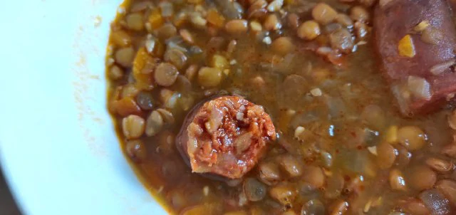

Sopa de Lentejas

Traditional-spanish dish. Typical spanish!
- ⏲️ Prep time: 5 min
- üç≥ Cook time: 35 min
- üçΩÔ∏è Servings: 4-6
Ingredients
- 1 carrot, chopped
- 1 green bell pepper, chopped
- 4 garlic cloves, minced
- 1 large onion, chopped
- 1 cup dry brown lentils, soaked overnight and drained
- 2 plum tomatoes, chopped
- 2 cups water, or as needed
- 1 bay leaf
- 1 tbsp extra-virgin olive oil
- ½ tsp of paprika
- ¼ spicy chorizo (optional)
Directions
- Heat olive oil in a large pot over medium heat.
- Add the onion, carrot, and bell pepper; cook and stir until vegetables begin to soften, about 5 minutes.
- Stir in the garlic, tomatoes, chorizo and bay leaf; cook about 4 minutes.
- Add lentils and water (water should be about an inch deeper than the level of the lentils).
- Bring to a boil over high heat. Reduce heat to low; simmer, uncovered, until lentils are just cooked, 15 to 20 minutes.
Contribution
Recipe tags: spanish